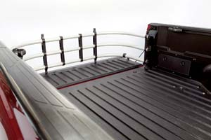

With the right accessories, you can turn your pickup into a Swiss army knife on wheels that will work harder and last longer. Even a few low-cost add-ons can increase a truck’s value and expand the horizons of what you can get done.
For example, the money I saved pulling my daughters’ car from a snow-filled ditch covered the cost of installing tow hooks on my pickup, plus we didn’t have to wait for the wrecker to show up. The hooks came in handy again when I put my truck into the same ditch. That time, my eldest daughter rescued me with a tractor - I was thrilled to be able to hook the tow-strap to the truck without having to swim in the mud.
To use your pickup for specialized work, you’ll need accessories to match the job. Take, for example, the 350-gallon plastic tank we bought to haul water to cattle in a remote pasture. The tank’s expense was small compared to what it would cost to run plumbing out that far. Thanks to our trusty little gasoline-engine-powered transfer pump, filling the mobile reservoir with creek water took less than five minutes.
Tow hooks and water tanks, though, are just the tip of the accessory iceberg. No matter what you need to pull, push, haul, build or fix, there’s an add-on that will make the job easier. Here are some of the best to consider for your pickup.
All manner of attachment points for load-securing straps or lines. Easy DIY install.
Most pickups come equipped with a few good tie-downs in the bed floor, but for many loads, their locations are ineffective. A few additional permanent tie-downs can be useful to secure special equipment such as water or fuel tanks. For additional flexibility, keep several stake-pocket mounted versions in the toolbox or behind the seat.
Steel hooks bolted to the truck frame. Easy DIY install.
Tow hooks offer safe purchase for chains and straps whenever you need to pull things for short distances, such as round hay bales, feed bunks or even the chicken house.
Rectangular pieces of rubber or other composite material that extend beneath the truck’s wheel wells. Easy DIY install.
Front mudflaps will protect the truck’s body from nicks caused by thrown gravel and road salt. The rear pair will do the same for the truck, and protect a trailer in tow or the car behind you. Choose an anti-sail and anti-spray design at least as wide as the truck’s tires.
Lockable steel, aluminum or plastic container designed to fit in a pickup’s bed. Easy DIY install.
A toolbox is essential to secure and organize your tools and gadgets. There are several different styles, including those that install across the bed at the front, along the sides or as part of a rollout system. If you also need to supply fuel to remote equipment, choose one with an integrated tank and transfer pump. Aluminum and powder-coated steel will offer the best security and longevity.
Polymeric protection for the pickup’s bed. Easy DIY or professional install.
The spray-in type results in a perfectly fitted liner that adheres permanently to the bed. The formed liner is molded to fit the bed and is removable. Either liner style will keep your truck’s bed from getting scratched, and may prevent rust. Depending on the texture, liners also can help keep your loads from sliding around. For best results, choose high-quality versions of either style.
Steel or aluminum front bumper or frame attachment designed to protect the truck’s front end. Easy DIY install.
A grill guard protects your pickup’s front end (the grill, radiator, headlights, etc.) from close encounters with brush or livestock, and provides attachment points for additional lighting. Choose an aluminum model if front-end weight capacity is a concern. If steel is the material of choice, be sure that it’s powder-coated for the best rust resistance.
Aluminum or steel attachment that mounts to the pickup’s bed, just behind the cab. Easy DIY install.
A headache rack keeps loose cargo in the bed from flying forward, through the rear window and into your head. This accessory is a must if you intend to heap-load your truck with firewood or stack hay bales above the bedsides. Choose high-quality aluminum or powder-coated steel models to resist corrosion.
Combination of two attachments that facilitate trailer towing. Easy DIY install.
The pickup’s rear bumper, or square-tube receiver - which is bolted to the frame beneath it - are the most common mounts for ball-type hitches designed for tagalong trailers. If you’ll regularly pull loads of 10,000 pounds or more, choose a gooseneck (ball-type) or fifth-wheel (kingpin-type) hitch that mounts to the truck’s frame ahead of the rear axle - these require making holes in the truck bed’s floor. Recommended for pickups equipped with the manufacturer’s tow-ready package.
Electric or PTO-powered rotating spools wound with steel cable. Experienced DIY or professional install.
Winches are most often used to pull disabled machines or stretch long runs of fence wire before fastening it to posts. However, with care and sufficient rigging, a winch can be used to drag logs from the woods, direct the fall of a soon-to-be felled tree, right an overturned tractor, slide a large haystack, and much more. For the best value, choose a heavy-duty electric model with at least enough capacity to pull your pickup’s weight. If you also need an air compressor, consider an integrated winch-compressor attachment.
Converts a pickup into a dump truck. Experienced DIY or professional install.
With a hydraulic bed hoist, dumping bulk materials, such as mulch or firewood, can be as easy as flipping a switch. Choose a package with a self-contained, electrically powered and controlled hydraulic (electric over hydraulic) system if your truck isn’t already equipped with a PTO pump. (Also check out Mother’s Hydraulic Dump Bed Conversion Plans.)
If you don’t want to modify your pickup, consider a dump bed insert. Easy to install, it fits into the bed and raises via an electric winch. When it’s not needed, the entire unit can be removed in minutes.
Portable 12-volt direct current arc welding system powered by the vehicle’s engine. Experienced DIY install.
This handy welder doesn’t take up any bed space and allows you to repair fence gates, tractors, implements and virtually anything else made of steel without having to drag them back to the shop. You also can fabricate brand-new components at any off-grid location using your truck’s engine for power. Some models also can supply electricity for power tools and charge 12-volt batteries.
12-volt direct current compressed air supply. Experienced DIY install.
Operate small pneumatic tools or fill tires far from the shop with a compressed air system tucked under the hood or between the frame rails. For easiest installation, choose a package complete with compressor, air tank, plumbing and wiring.
|
MATTHEW T. STALLBAUMER A grill guard protects your pickup’s front end (the grill, radiator, headlights, etc.) from close encounters with brush or livestock, and provides attachment points for additional lighting. |
MATTHEW T. STALLBAUMER Tow hooks offer safe purchase for chains and straps whenever you need to pull things for short distances, such as round hay bales, feed bunks or even the chicken house. |
MATTHEW T. STALLBAUMER Choose an anti-sail and anti-spray mudflap design at least as wide as the truck’s tires. |
|
TOYOTA A few additional permanent tie-downs can be useful to secure special equipment such as water or fuel tanks. |
STANDARD HAMILTON CO. With a hydraulic bed hoist or dump bed insert, dumping bulk materials, such as mulch or firewood, can be as easy as flipping a switch. |
 TOYOTA A bed liner will keep your truck’s bed from getting scratched. |